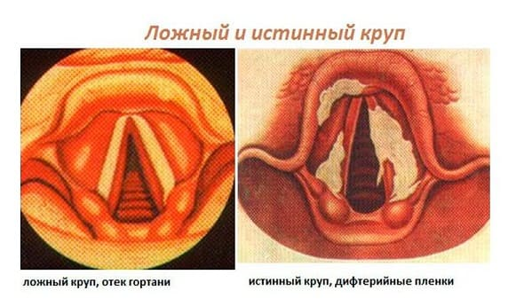
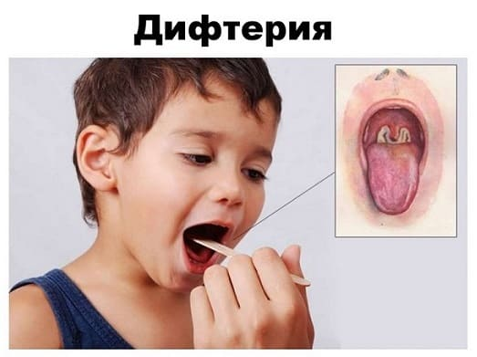
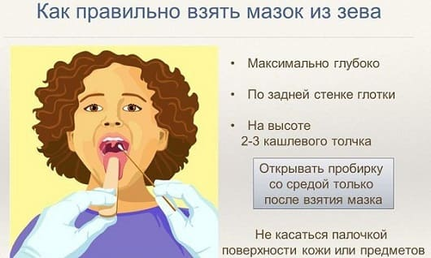

Заражаются дифтерией воздушно-капельным путем. Дифтерийная палочка вызывает воспалительный процесс, который чаще всего (более 90 % всех случаев дифтерии) локализуется в зеве.
Начинается болезнь с недомогания, повышения температуры, болей в горле. Вот тут-то и проявляется особая «подлость» дифтерийного токсина – поражая нервные окончания, он, во-первых, вызывает состояние, похожее на местную анестезию (т. е. вроде бы горло болит, но не очень-то и сильно), а во-вторых, воздействие экзотоксина на организм не сопровождается значительным повышением температуры (выше 38 ºС – довольно редко). Таким образом, начало дифтерии очень часто имитирует не просто обычное ОРЗ, а как бы легкое ОРЗ: и температура тела невысокая, и горло болит не сильно, и даже насморка нет (кстати, отсутствие насморка – один из наиболее типичных симптомов дифтерии). Все это и приводит к тому, что диагностировать болезнь в первые сутки после ее начала, как правило, никому не удается. Но уже на второй день в горле (обычно на миндалинах) начинают появляться налеты. Сначала они тонкие и светлые – как паутина, но постепенно сереют и становятся плотными, образуя пленки (по-латыни пленка – «diftera», отсюда и название болезни).

Нетрудно себе представить, насколько тяжело будет протекать болезнь, если пленки будут образовываться не на миндалинах, а в гортани. Поражение гортани сопровождается развитием дифтерийного крупа,который, в отличие от крупа вирусного, характеризуется:
• медленным развитием симптомов и постепенным нарастанием тяжести состояния;
• очень выраженными изменениями голоса;
• отсутствием проявлений ОРВИ – насморка, высокой температуры тела.
Что необходимо знать:
• Изменения в горле (воспаление, дифтерийные пленки, боль) представляют собой лишь временные трудности, которые, рано или поздно, но проходят сами по себе, даже без лечения. Однако токсин, который выделяет размножающийся микроб, очень быстро всасывается в кровь и оседает в сердце, почках и нервных стволах, вызывая специфические осложнения дифтерии (соответственно миокардит, нефроз, полиневрит). Следует знать, что именно осложнения чаще всего определяют тяжесть болезни и, как это ни печально, иногда становятся причиной смерти.
• Противодифтерийная сыворотка может нейтрализовать только тот токсин, который циркулирует в крови, но совершенно не влияет на уже «связавшийся» с клетками сердца, почек, нервной системы. Приведенная информация логично объясняет тот факт, что успех лечения дифтерии зависит, прежде всего, от того, в какие сроки от начала заболевания введена сыворотка. Если, например, сыворотка вводится на пятый день болезни, а не на второй, вероятность очень серьезных последствий и даже гибели человека повышается в 20 раз! Отсюда следует, что благоразумные родители ни при каких обстоятельствах не должны проявлять особой смелости, и при любых (!) болях в горле, любых изменениях голоса, любом затруднении дыхания обязаны показать ребенка врачу. Нельзя забывать и о том, что дифтерия в настоящее время встречается не так уж часто – многие врачи ее просто никогда в глаза не видели. Поэтому если вашего участкового педиатра одолевают сомнения в диагнозе, которые могут быть вполне закономерными, то не следует игнорировать направление в стационар – не та это болезнь, дифтерия, чтобы рисковать.

• Как уже вполне понятно, единственно реальным способом профилактики являются прививки. Дифтерийный анатоксин входит в состав знаменитой вакцины АКДС (против коклюша, дифтерии и столбняка). Стопроцентной гарантии не заболеть вакцина не дает, но практически полностью исключает возможность развития тяжелых форм дифтерии.
• Легкие формы дифтерии достаточно трудны для диагностики, даже для очень опытного инфекциониста. Именно поэтому абсолютно всем больным с любой ангиной, с любым крупом медицинские работники в обязательном порядке берут из зева мазки. Выделить в этих мазках дифтерийную палочку совсем не трудно, а в связи с массовыми исследованиями нередко возникают две довольно типичные ситуации.
1 У ребенка заболело горло, на второй день болезни родители вызвали педиатра, который поставил диагноз «ангина», назначил лечение и взял мазок. Через 3–4 дня состояние ребенка просто замечательное, он хорошо себя чувствует, ни на что не жалуется. И на фоне этого благополучия раздается звонок в дверь, появляется педиатр и траурным голосом сообщает родителям «радостное» известие – в мазке обнаружена дифтерийная палочка.

Описанная ситуация в подавляющем большинстве случаев свидетельствует о том, что ребенок, скорее всего, правильно привитой, перенес легкую форму дифтерии. Введение противодифтерийной сыворотки при таких формах совсем не обязательно, а обязательно следующее: во-первых, тщательное наблюдение в течение 10–20 дней, для того чтобы своевременно выявить и пролечить возможные осложнения со стороны сердца, почек или нервной системы, и во-вторых, необходимо лечение антибиотиками, для того чтобы погубить дифтерийную палочку. И первое, и второе желательно делать в больнице, хотя бы потому, что наиболее эффективным способом профилактики осложнений является соблюдение строго постельного режима.
2 После того, как кому-нибудь врачи поставят диагноз «дифтерия», начнут активно работать санитарные службы – обследовать (брать мазки) у всех, кто контактировал с заболевшим, а это могут быть сотни людей – весь подъезд, весь класс, весь детский сад и т. д. Даром такая работа не проходит: на одного заболевшего дифтерией, как правило, обнаруживается 5–10 абсолютно (!) здоровых людей, у которых в горле или в носу «живет» дифтерийная палочка. Что же это за люди и почему они дифтерией не заболели? Дело том, что у правильно привитого человека, будь то взрослый или ребенок, в крови имеется достаточное количество антител, предохраняющих его от болезни: дифтерийная палочка в горле живет, но токсин, который она вырабатывает, своевременно нейтрализуется и болезни не возникает. Таких людей, абсолютно здоровых, но с бактерией в горле, называют носителями дифтерийной палочки. Именно носители, сами того не ведая, разносят инфекцию, подвергая постоянной угрозе тех, кто с ними контактирует. И именно поэтому носителей лечат и нередко изолируют в инфекционную больницу. Это как раз тот случай, когда человек страдает не ради себя, а ради общества. Но деваться тут некуда – все равно с этой палочкой ни вас, ни вашего ребенка никуда не пустят – ни в детский сад, ни в школу, ни на работу.
Как лечат дифтерию?
Прежде всего, разумеется, вводят сыворотку. Обязательно назначают антибиотики (чаще всего обычный эритромицин) – чем быстрее будет погублена дифтерийная палочка, тем меньше она успеет выработать токсина это, во-первых, и во-вторых, именно антибиотики делают больного дифтерией и носителей дифтерийной полочки безопасными для окружающих.
При дифтерийном крупе, если больной не в состоянии сам откашлять пленки, их убирают – под наркозом, с помощью специального прибора осматривают гортань и щипцами или электроотсосом удаляют пленки. В тяжелых случая приходится делать интубацию или трахеостомию.
При развитии осложнений способов помочь больному имеется множество, но, к сожалению, эффективность этой помощи оставляет желать лучшего. Лечить приходится довольно долго (несколько месяцев), однако утешает тот факт, что дифтерийные осложнения редко оставляют пожизненные следы – т. е. если уж дело пошло на поправку, выздоровление будет полным, без особых последствий и инвалидностей.
Е.О.Комаровский. "Здоровье ребенка"